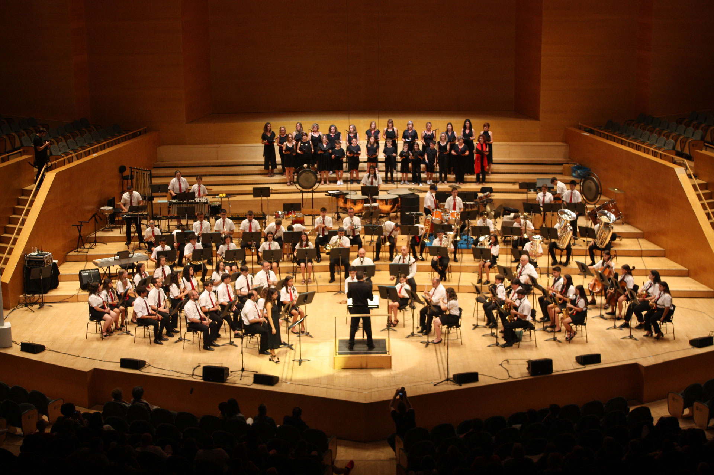

LA SÉNIA · DES DE 1904
AGRUPACIÓ
MUSICAL
SENIENCA
Una banda. Moltes generacions. Més d'un segle compartint música, cultura i vida.

01 / LA BANDA
Una història que continua sonant.
Des de 1904, l'Agrupació Musical Senienca forma part de la vida cultural de la Sénia.
Una història de música, aprenentatge i compromís compartit entre generacions.
CONEIX L'AGRUPACIÓ ↗02 / ESCENARIS